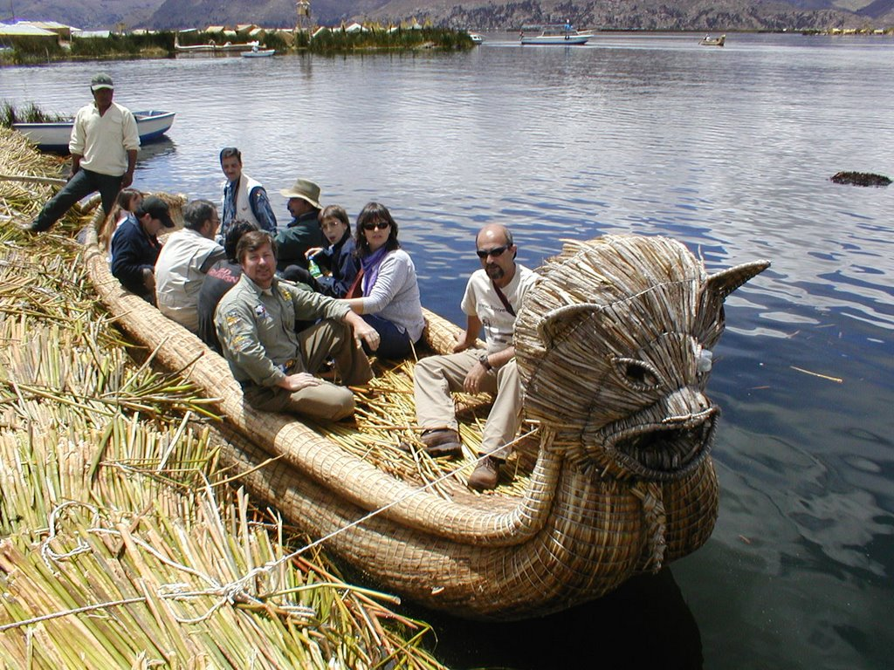

Nuestras Actividades

Paseos Turisticos
sumergete en un viaje y descubre los lugares mas hermosos para visitar y comparte con en pueblo local,ven y siente el amanecer
informate
Comida Tipica
siente todos los sabores tradicionales y degusta los mas exoticos manjares le la region,aumenta la experiencia de tu paladar
informate